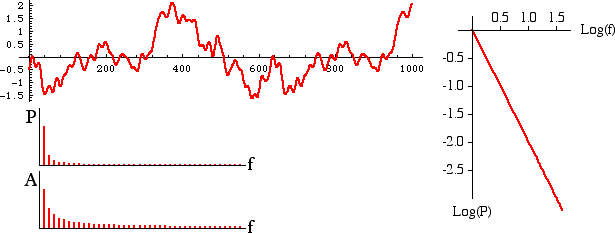

| For Brownian noise the change, or increment, from one moment to the next is random and normally distributed. (So Brownian noise is the integral of white noise.) |
| Here are a sample of Brownian noise, its power spectrum, and plots of power and amplitude against frequency. |
|  |